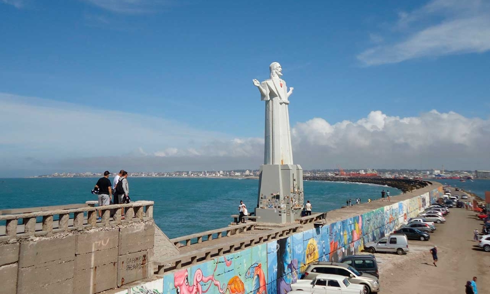

1 / 10
Ciudad de Mar del Plata
2 / 10
Puerto de Mar del Plata
3 / 10
Escollera y Restaurant Club de Pesca
4 / 10

Monumento al Lobo Marino
5 / 10

Ciudad de Mar del Plata
6 / 10
Torreon de Mar del Plata
7 / 10

Puerto de Mar del Plata
8 / 10

Escollera Norte
9 / 10
Casino de Mar del Plata
10 / 10
Atardecer en Mar del Plata
Informacion de utilidad
El Partido de General Pueyrredon, cuya ciudad cabecera es Mar del Plata, tiene
múltiples formas de acceso
Estos telefonos pueden resultarte de utilidad para realizar consultas o ante
alguna
emegencia
Conoce la historia de nuestra ciudad, sus origenes y su desarrollo hasta la época
actual